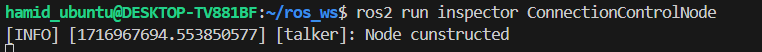
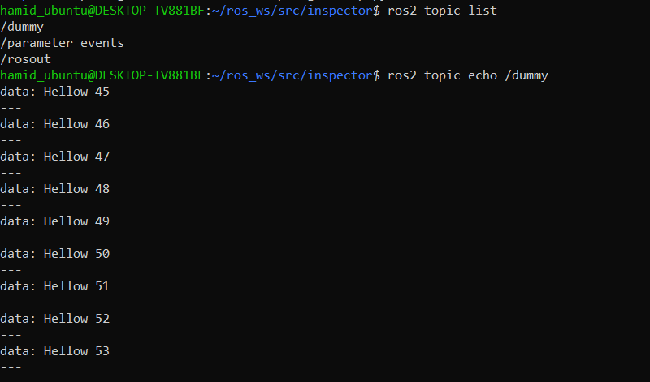
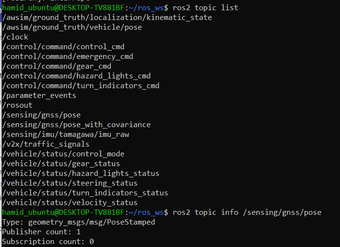
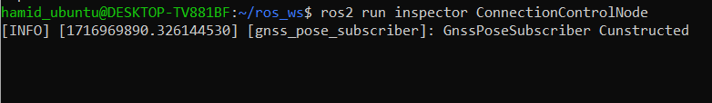
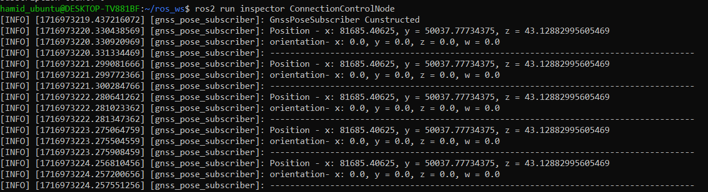
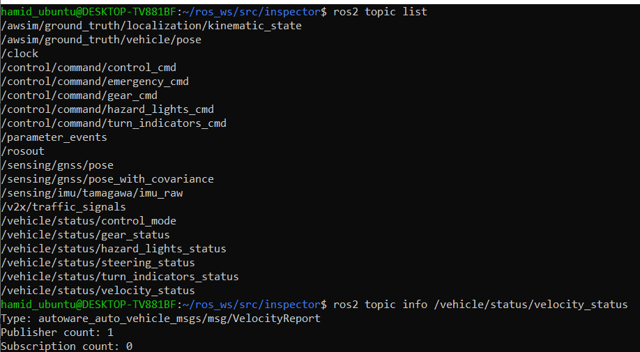
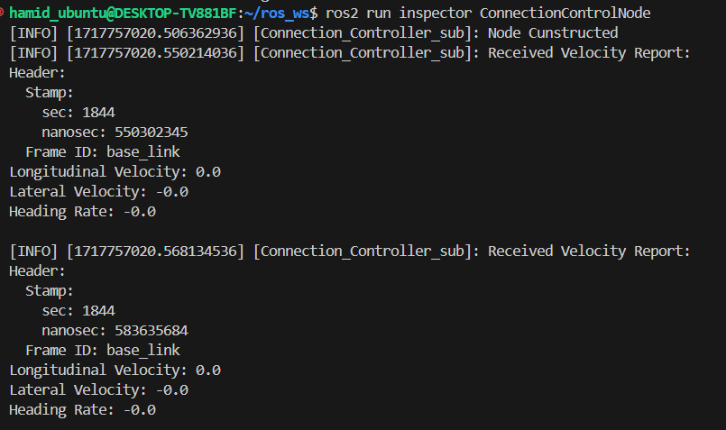
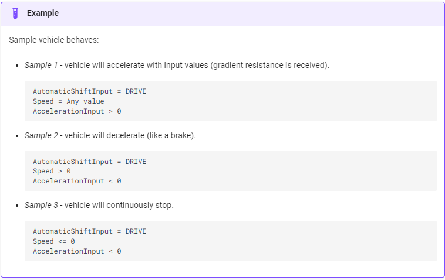

Communication with Awsim
Phase No.1 - Creating a simple ROS2 Node
If you have not installed ROS2 humble please refer to Installing ROS2 page.
To communicate with Awsim, filling control/command topics and subscribing to other topics that Awsim publishes, we need to create a Node and write the appropriate code. To do this, we first create a workspace and package. You can also look at ROS2 documentation for better undertanding of the process.
first install colcon build tool on Ubuntu:
sudo apt install python3-colcon-common-extensions
Creating a workspace
First, create a directory simple_av to contain our workspace:
mkdir -p ~/simple_av/src
cd ~/simple_av
At this point the workspace contains a single empty directory src:
.
└── src
1 directory, 0 files
In the root of the workspace, run colcon build. the option --symlink-install allows the installed files to be changed by changing the files in the source space (e.g. Python files or other non-compiled resources) for faster iteration.
colcon build --symlink-install
After the build is finished, we should see the build, install, and log directories:
.
├── build
├── install
├── log
└── src
4 directories, 0 files
Creating a package
First, source your ROS 2 installation.
source /opt/ros/humble/setup.bash
Make sure you are in the src folder before running the package creation command.
cd ~/ros2_ws/src
The command syntax for creating a new package in ROS 2 is:
ros2 pkg create --build-type ament_python <your_package_name>
The simplest possible package may have a file structure that looks like:
my_package/
package.xml
resource/my_package
setup.cfg
setup.py
my_package/
Creating a python node file
Go to the package folder and create a .py file. Give access to it using chmod command.
cd ~/simple_av/src/my_package/my_package
touch ConnectionController.py
chmod +x ConnectionController.py
Simple code for a subscriber node on /sensing/gnss/pose topic - Python
#!/usr/bin/env python3
import rclpy
from rclpy.node import Node
from std_msgs.msg import String
class MinimalPublisher(Node):
def __init__(self):
super().__init__('talker')
self.get_logger().info("Node cunstructed")
self.publisher_ = self.create_publisher(String, 'dummy', 10)
timer_period = 0.5
self.timer = self.create_timer(timer_period, self.callback)
self.i = 0
def callback(self):
msg = String()
msg.data = "Hellow %d" % self.i
self.publisher_.publish(msg)
self.i += 1
def main(args=None):
rclpy.init(args=args)
_node = MinimalPublisher()
rclpy.spin(_node)
_node.destroy_node()
rclpy.shutdown()
if __name__ == '__main__':
main()
Modifications on setup.py and package.xml
Add the following code into the setup.py
entry_points={
'console_scripts': [
'ConnectionControlNode = my_package.ConnectionController:main',
],
},
Add the following to the package.xml
<build_depend>rclpy</build_depend>
<build_depend>std_msgs</build_depend>
Testing
First, go to the root and build using colcon. then source the workspace
cd ~/simple_av
colcon build
source /install/setup.bash
Now, run the node.


Phase No.2 - Subscribing to Awsim Topics
In this Phase we aim to subscribe to Awsim Topics. we try to subscibe to 2 topics from Awsim.
1. /sensing/gnss/pose Topic
Step 1: Finding the topic informations
Run the Awsim scene and use the command bellow to get the information of the desiered topic.
ros2 topic info </topic_name>

As we can see the message type of the /sensing/gnss/pose topic is geometry_msgs/msg/PoseStamped.
Step 2: Creating ROS subscriber node
Python code:
#!/usr/bin/env python3
import rclpy
from rclpy.node import Node
from std_msgs.msg import String
from geometry_msgs.msg import PoseStamped
class GnssPoseSubscriber(Node):
def __init__(self):
super().__init__('gnss_pose_subscriber')
self.get_logger().info("GnssPoseSubscriber Cunstructed")
self.subscription = self.create_subscription(
PoseStamped,
'/sensing/gnss/pose',
self.listener_callback,
10
)
self.subscription
def listener_callback(self, msg):
self.get_logger().info(f'Position - x: {msg.pose.position.x}, y = {msg.pose.position.y}, z = {msg.pose.position.z}')
self.get_logger().info(f'orientation- x: {msg.pose.orientation.x}, y = {msg.pose.orientation.y}, z = {msg.pose.orientation.z}, w = {msg.pose.orientation.w}')
self.get_logger().info("-------------------------------------------------------------------------------------")
def main(args=None):
rclpy.init(args=args)
_node = GnssPoseSubscriber()
rclpy.spin(_node)
_node.destroy_node()
rclpy.shutdown()
if __name__ == '__main__':
main()
setup.py:
entry_points={
'console_scripts': [
'ConnectionControlNode = inspector.ConnectionController:main',
],
},
package.xml:
<build_depend>rclpy</build_depend>
<build_depend>std_msgs</build_depend>
<build_depend>geometry_msgs</build_depend>
After applying the mentioned modification, source the workplace and run the colcon build in workspace root. Then, run the node
ros2 run my_package ConnectionControllerNode

Step2: Run Awsim
If you have not set up the windows/WSL connection you may not see the results below.

2. /vehicle/status/velocity_status Topic
Step 1: Finding the topic informations
Run the Awsim scene and use the command bellow to get the information of the desiered topic.
ros2 topic info </topic_name>

As you can see the message type of the /vehicle/status/velocity_status topic is autoware_auto_vehicle_msgs/msg/VelocityReport.
Step 2: Creating ROS subscriber node
#!/usr/bin/env python3
import rclpy
from rclpy.node import Node
from std_msgs.msg import String
from geometry_msgs.msg import PoseStamped
from autoware_auto_vehicle_msgs.msg import VelocityReport
class GnssPoseSubscriber(Node):
def __init__(self):
super().__init__('Connection_Controller_sub')
self.get_logger().info("Node Cunstructed")
self.subscription = self.create_subscription(
VelocityReport,
'/vehicle/status/velocity_status',
self.listener_callback,
10
)
self.subscription
def listener_callback(self, msg):
self.get_logger().info(
f'Received Velocity Report:\n'
f'Header:\n'
f' Stamp:\n'
f' sec: {msg.header.stamp.sec}\n'
f' nanosec: {msg.header.stamp.nanosec}\n'
f' Frame ID: {msg.header.frame_id}\n'
f'Longitudinal Velocity: {msg.longitudinal_velocity}\n'
f'Lateral Velocity: {msg.lateral_velocity}\n'
f'Heading Rate: {msg.heading_rate}\n'
)
def main(args=None):
rclpy.init(args=args)
_node = GnssPoseSubscriber()
rclpy.spin(_node)
_node.destroy_node()
rclpy.shutdown()
if __name__ == '__main__':
main()
setup.py:
entry_points={
'console_scripts': [
'ConnectionControlNode = inspector.ConnectionController:main',
],
},
package.xml:
<build_depend>autoware_auto_vehicle_msgs</build_depend>
<exec_depend>autoware_auto_vehicle_msgs</exec_depend>
After applying the mentioned modification, source the workplace and run the colcon build in workspace root. Then, run the node
ros2 run my_package ConnectionControllerNode

Phase No.3 - Publishing to Awsim Topics
In this phase we are going to move the vehicle in Awsim. To do this, we have to publish into atleast to topics.
1. /control/command/control_cmd: For controlling the vehicle speed.
2. /control/command/gear_cmd: For changing the gear to Drive mode.
List of Subscribers of Awsim
| Category | Topic | Message type |
|---|---|---|
| Control | /control/command/control_cmd | autoware_auto_control_msgs/AckermannControlCommand |
| Control | /control/command/gear_cmd | autoware_auto_vehicle_msgs/GearCommand |
| Control | /control/command/turn_indicators_cmd | autoware_auto_vehicle_msgs/TurnIndicatorsCommand |
| Control | /control/command/hazard_lights_cmd | autoware_auto_vehicle_msgs/HazardLightsCommand |
| Control | /control/command/emergency_cmd | tier4_vehicle_msgs/msg/VehicleEmergencyStamped |

ROS2 Node
Use the code below to move the vehicle.
import rclpy
from rclpy.node import Node
from autoware_auto_control_msgs.msg import AckermannControlCommand, AckermannLateralCommand, LongitudinalCommand
from builtin_interfaces.msg import Time
from rclpy.qos import QoSProfile, DurabilityPolicy, HistoryPolicy, ReliabilityPolicy # Import necessary modules
from autoware_auto_vehicle_msgs.msg import GearCommand
class AckermannControlPublisher(Node):
def __init__(self):
super().__init__('ackermann_control_publisher')
# Create a QoS profile with all required settings
qos_profile = QoSProfile(
reliability=ReliabilityPolicy.RELIABLE,
history=HistoryPolicy.KEEP_LAST,
depth=10,
durability=DurabilityPolicy.TRANSIENT_LOCAL
)
# Create publishers for control and gear commands
self.control_publisher = self.create_publisher(AckermannControlCommand, '/control/command/control_cmd', qos_profile)
self.gear_publisher = self.create_publisher(GearCommand, '/control/command/gear_cmd', qos_profile)
# Create a timer for publishing commands
self.timer = self.create_timer(0.5, self.callback)
def callback(self):
# Create and publish control command
control_msg = AckermannControlCommand()
control_msg.stamp = self.get_clock().now().to_msg()
control_msg.lateral = self.get_lateral_command()
control_msg.longitudinal = self.get_longitudinal_command()
self.control_publisher.publish(control_msg)
# Create and publish gear command
gear_msg = GearCommand()
gear_msg.stamp = self.get_clock().now().to_msg()
gear_msg.command = GearCommand.DRIVE
self.gear_publisher.publish(gear_msg)
self.get_logger().info("Publishing")
def get_lateral_command(self):
lateral_command = AckermannLateralCommand()
lateral_command.steering_tire_angle = 0.0 # example value
lateral_command.steering_tire_rotation_rate = 0.0 # example value
return lateral_command
def get_longitudinal_command(self):
longitudinal_command = LongitudinalCommand()
longitudinal_command.speed = 2.0 # example value
longitudinal_command.acceleration = 0.5 # example value
return longitudinal_command
def get_gear_command(self):
gear = GearCommand()
gear.stamp=self.get_clock().now().to_msg()
gear.command=GearCommand.DRIVE
def main(args=None):
rclpy.init(args=args)
node = AckermannControlPublisher()
rclpy.spin(node)
node.destroy_node()
rclpy.shutdown()
if __name__ == '__main__':
main()
Make sure to define the QoS like the code above. Quallity of service setting
setup.py
entry_points={
'console_scripts': [
'ackermann_control_publisher = your_package.control_publisher:main',
],
},
package.xml
<build_depend>rclpy</build_depend>
<build_depend>std_msgs</build_depend>
<build_depend>geometry_msgs</build_depend>
<build_depend>autoware_auto_vehicle_msgs</build_depend>
<build_depend>autoware_auto_control_msgs</build_depend>
<build_depend>builtin_interfaces</build_depend>
<exec_depend>autoware_auto_control_msgs</exec_depend>
<exec_depend>builtin_interfaces</exec_depend>
<exec_depend>autoware_auto_vehicle_msgs</exec_depend>
<test_depend>ament_copyright</test_depend>
<test_depend>ament_flake8</test_depend>
<test_depend>ament_pep257</test_depend>
<test_depend>python3-pytest</test_depend>
<exec_depend>custom_interfaces</exec_depend>
Now run the Awsim scene and then run the node.
cd ~/ros_ws
colcon build --packages-select your_package
ros2 run inspector ackermann_control_publisher